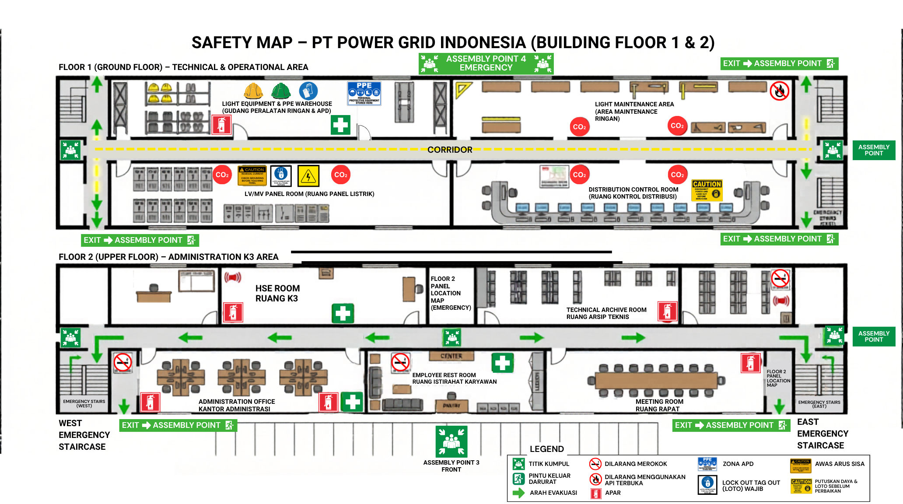
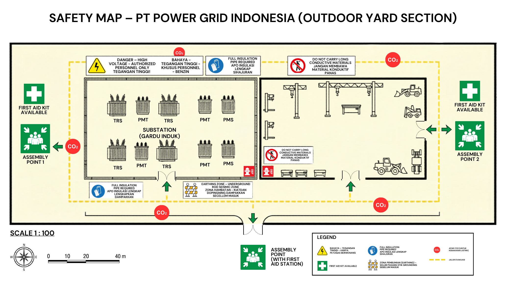

Safety Map Area Operasional
Klik pada gambar atau tombol perbesar untuk melihat detail peta keselamatan dalam ukuran penuh. Setiap area operasional dilengkapi peta keselamatan yang diperbarui secara berkala.

Safety Map Gedung Utama & Gardu Induk
Denah keselamatan area gedung utama PT Power Grid Indonesia meliputi ruang kontrol distribusi, gardu induk, ruang panel listrik, gudang peralatan, area maintenance, dan kantor administrasi. Menampilkan jalur evakuasi, lokasi APAR, P3K, titik kumpul, dan area tegangan tinggi.

Safety Map Area Outdoor & Switchyard
Peta keselamatan kawasan luar gedung PT Power Grid Indonesia mencakup area tegangan tinggi 150 kV, switchyard, transformator, area parkir dan titik kumpul utama, serta jalur evakuasi menuju pintu utama (gate).
Legenda Safety Map
Makna setiap simbol dan warna yang digunakan pada peta keselamatan PT Power Grid Indonesia sesuai standar K3 nasional dan ISO 7010.
Alat Pemadam Api Ringan tersebar di gardu induk, ruang panel, ruang kontrol, dan gudang peralatan. Untuk antisipasi kebakaran akibat arus pendek atau minyak trafo.
Zona dengan tegangan tinggi 150 kV di gardu induk dan switchyard. Akses terbatas, wajib APD lengkap, dan berisiko sengatan listrik serta busur api.
Helm listrik kelas E, sarung tangan isolasi, sepatu isolasi, pelindung muka tahan api. Serta pelindung telinga (earmuff) untuk area gardu induk.
Risiko arc flash (percikan api) saat pemutusan beban listrik skala besar. Operasikan dari jarak jauh atau gunakan tongkat operasi (hot stick).
Minyak trafo bersifat mudah terbakar dan beracun jika terhirup. Dilengkapi bak penampung dan pemeriksaan kebocoran secara rutin.
Paparan medan elektromagnetik kuat dari trafo dan gardu induk. Batasi waktu kerja di dekat sumber dan pasang rambu peringatan.
Kebisingan dari dengungan trafo dan peralatan gardu induk. Wajib menggunakan pelindung telinga (earmuff) saat beraktivitas di area tersebut.
Sistem grounding wajib berfungsi sempurna. Lakukan pengujian secara berkala minimal satu bulan sekali untuk mencegah kejutan listrik.
Standar ISO 7010
Seluruh simbol safety map mengacu standar internasional ISO 7010 tentang tanda-tanda keselamatan.
Pembaruan Berkala
Safety map diperbarui setiap tahun atau setiap ada perubahan tata letak fasilitas yang signifikan.
Lokasi Fisik
Peta fisik dipasang di setiap pintu masuk ruangan dan area strategis dalam format cetak A2 laminasi.